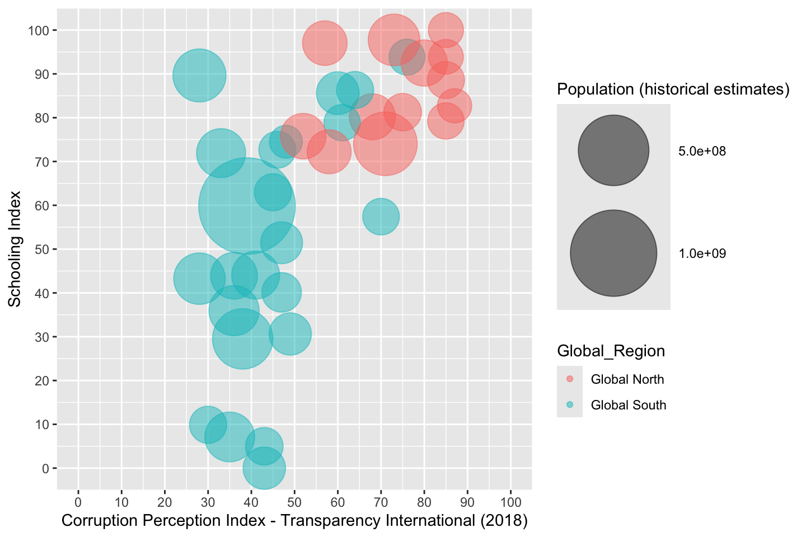
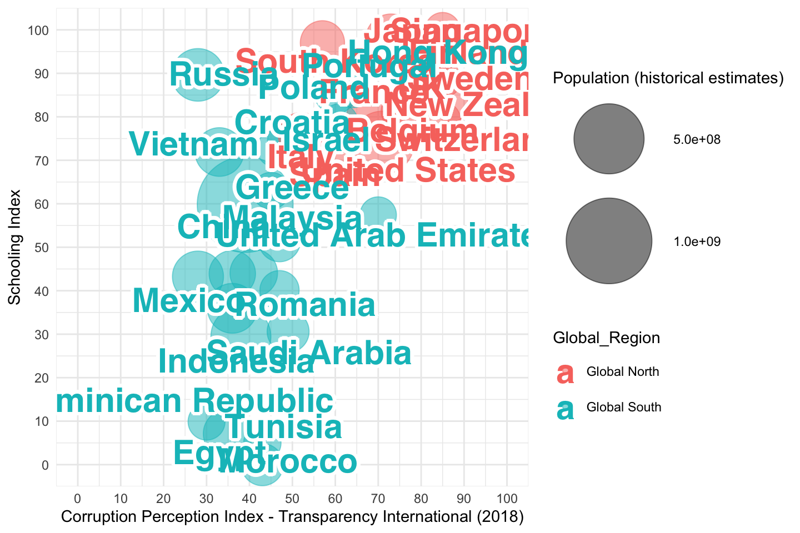
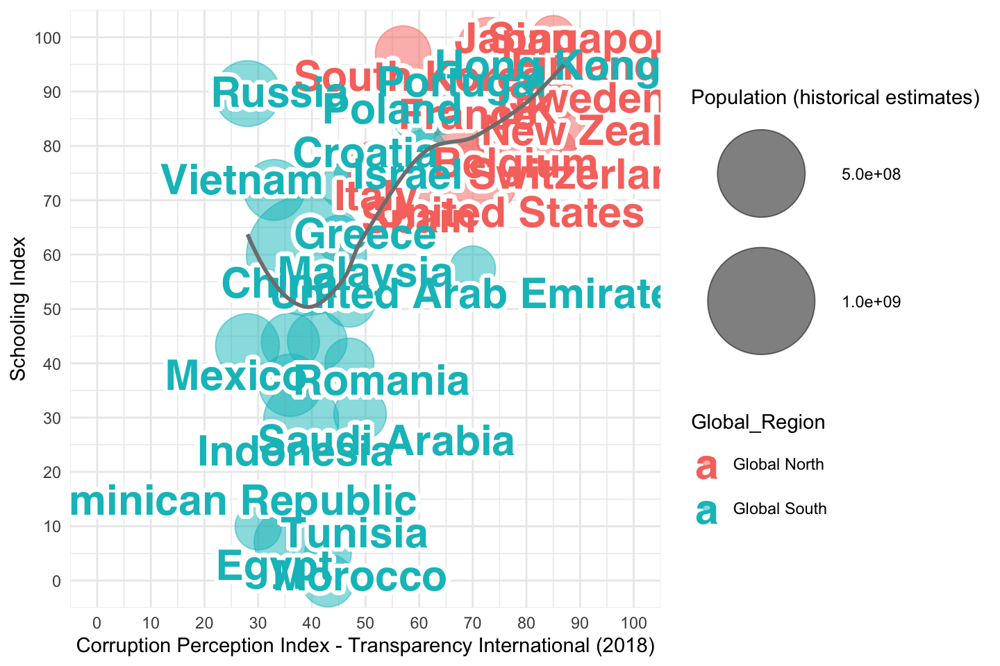
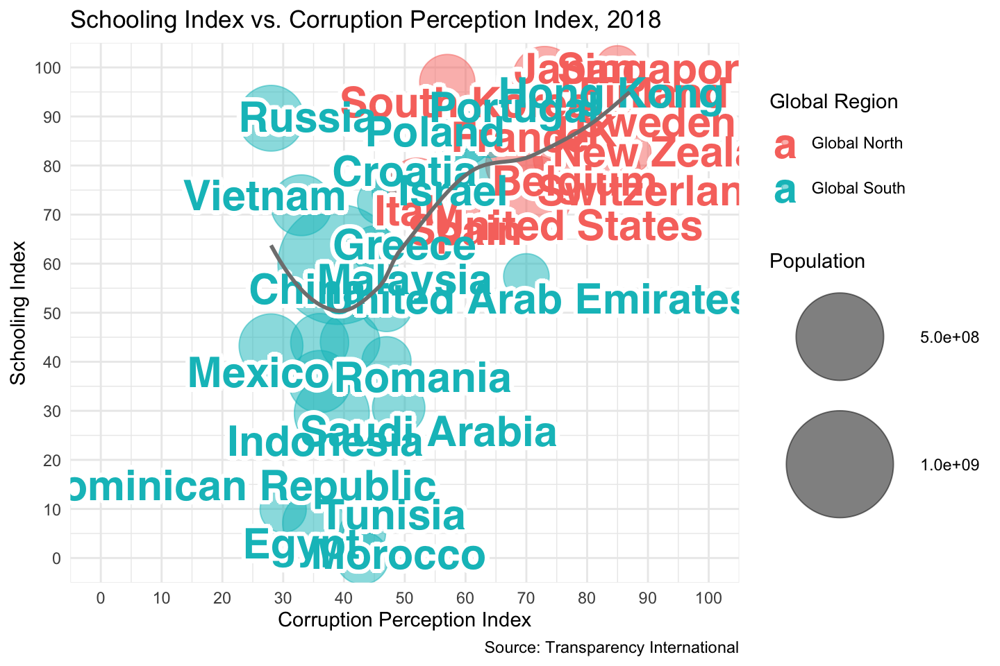
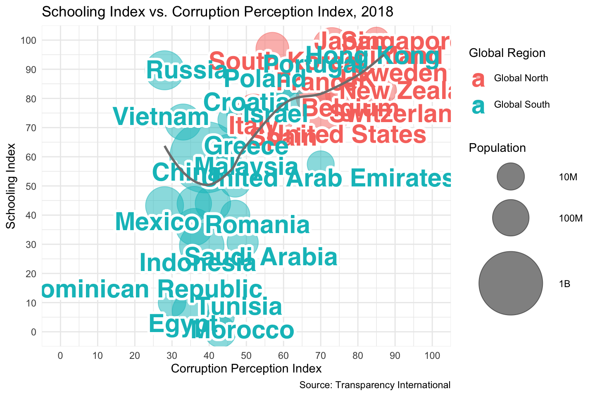
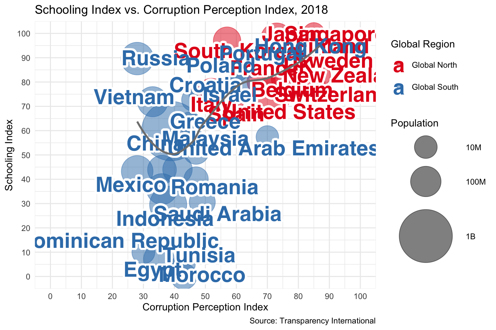
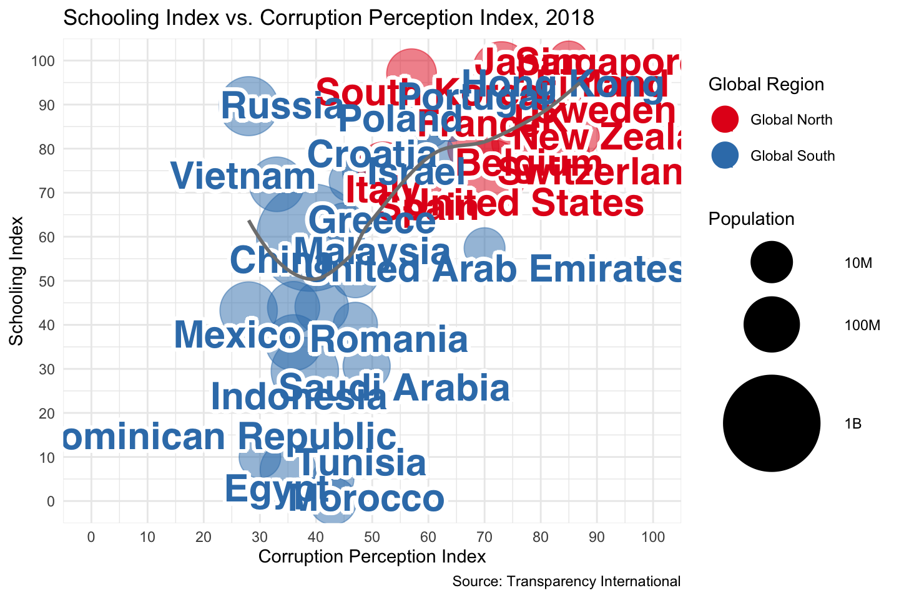
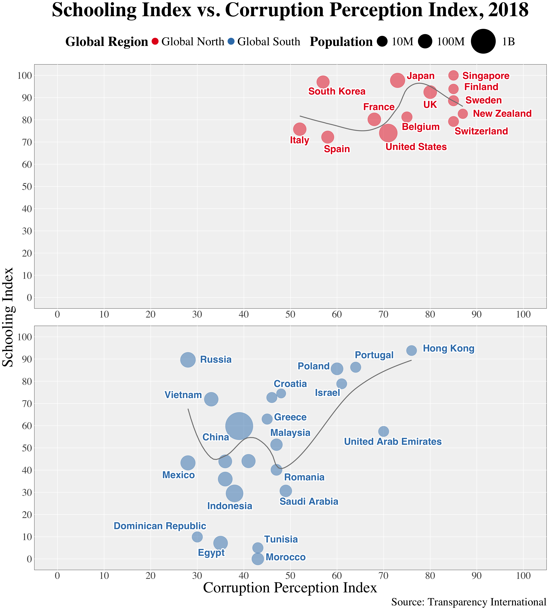

library(ggplot2)
library(dplyr)
library(ggrepel)
library(readr)
library(countrycode)
library(dbscan)
library(FNN)
library(shadowtext)CSC3007 Palegoldenrod Part 1
Steps taken to preprocess the data & Initial Plotting
1 Import library
2 Import data
# Read the data
data <- read_csv(
"average-years-of-schooling-vs-corruption-perception-index.csv"
)
# Inspect the data
head(data)# A tibble: 6 × 7
Entity Code Year Learning-Adjusted Years of…¹ Corruption Perceptio…²
<chr> <chr> <dbl> <dbl> <dbl>
1 Abkhazia OWID_ABK 2015 NA NA
2 Afghanistan AFG 2017 4.87 15
3 Afghanistan AFG 2018 4.95 16
4 Afghanistan AFG 2020 5.05 NA
5 Afghanistan AFG 2012 NA 8
6 Afghanistan AFG 2013 NA 8
# ℹ abbreviated names: ¹`Learning-Adjusted Years of School`,
# ²`Corruption Perception Index - Transparency International (2018)`
# ℹ 2 more variables: `Population (historical estimates)` <dbl>,
# Continent <chr>3 Add continent information
# Add continent information using the countrycode package
data <- data |>
mutate(
Continent = countrycode(
sourcevar = Entity,
origin = "country.name",
destination = "continent"
)
)
# Check for any countries that couldn't be categorized
any(is.na(data$continent))[1] FALSE# Inspect the data with the new Continent column
head(data)# A tibble: 6 × 7
Entity Code Year Learning-Adjusted Years of…¹ Corruption Perceptio…²
<chr> <chr> <dbl> <dbl> <dbl>
1 Abkhazia OWID_ABK 2015 NA NA
2 Afghanistan AFG 2017 4.87 15
3 Afghanistan AFG 2018 4.95 16
4 Afghanistan AFG 2020 5.05 NA
5 Afghanistan AFG 2012 NA 8
6 Afghanistan AFG 2013 NA 8
# ℹ abbreviated names: ¹`Learning-Adjusted Years of School`,
# ²`Corruption Perception Index - Transparency International (2018)`
# ℹ 2 more variables: `Population (historical estimates)` <dbl>,
# Continent <chr>4 Filter data for the year 2018
# Filter data for the year 2018 and remove NA continents
data_2018 <- data |>
filter(Year == 2018 & !is.na(Continent))
# Inspect the filtered data
head(data_2018)# A tibble: 6 × 7
Entity Code Year Learning-Adjusted Years of…¹ Corruption Perceptio…²
<chr> <chr> <dbl> <dbl> <dbl>
1 Afghanistan AFG 2018 4.95 16
2 Albania ALB 2018 8.85 36
3 Algeria DZA 2018 7.05 35
4 American Samoa ASM 2018 NA NA
5 Andorra AND 2018 NA NA
6 Angola AGO 2018 4.23 19
# ℹ abbreviated names: ¹`Learning-Adjusted Years of School`,
# ²`Corruption Perception Index - Transparency International (2018)`
# ℹ 2 more variables: `Population (historical estimates)` <dbl>,
# Continent <chr>5 Add Global North/South information
# Define lists for Global North and South countries
global_north <- c(
"United States", "Canada", "United Kingdom", "Germany",
"France", "Italy", "Spain", "Australia", "New Zealand",
"Japan", "South Korea", "Singapore", "Norway", "Sweden",
"Denmark", "Finland", "Netherlands", "Belgium", "Switzerland",
"Austria", "Ireland", "Luxembourg"
)
# Add Global North/South information
data_2018 <- data_2018 |>
mutate(
Global_Region = ifelse(
Entity %in% global_north,
"Global North",
"Global South"
)
)
# Inspect the data with the new Global Region column
head(data_2018)# A tibble: 6 × 8
Entity Code Year Learning-Adjusted Years of…¹ Corruption Perceptio…²
<chr> <chr> <dbl> <dbl> <dbl>
1 Afghanistan AFG 2018 4.95 16
2 Albania ALB 2018 8.85 36
3 Algeria DZA 2018 7.05 35
4 American Samoa ASM 2018 NA NA
5 Andorra AND 2018 NA NA
6 Angola AGO 2018 4.23 19
# ℹ abbreviated names: ¹`Learning-Adjusted Years of School`,
# ²`Corruption Perception Index - Transparency International (2018)`
# ℹ 3 more variables: `Population (historical estimates)` <dbl>,
# Continent <chr>, Global_Region <chr>6 Remove based on top known countries
# List of top 50 well-known countries
top_50_countries <- c(
"France", "United States", "Italy", "Spain",
"China", "Mexico", "Turkey", "Germany",
"United Kingdom", "Thailand", "Japan", "Canada",
"Russia", "Malaysia", "Greece", "Portugal",
"Austria", "Australia", "Netherlands", "Switzerland",
"Singapore", "South Korea", "Hong Kong", "Czech Republic",
"Poland", "Sweden", "Denmark", "Egypt",
"Croatia", "Norway", "Indonesia", "Ireland",
"Romania", "Belgium", "Vietnam", "Philippines",
"Argentina", "Finland", "Peru", "United Arab Emirates",
"Morocco", "Israel", "New Zealand", "Colombia",
"Bulgaria", "Saudi Arabia", "Hungary", "Tunisia", "Dominican Republic"
)
# List of countries to manually remove
countries_to_remove <- c(
"Austria", "Germany", "Norway", "Denmark", "Australia", "Ireland",
"Peru", "Argentina", "Bulgaria", "Colombia", "Canada", "Netherlands"
)
# Filter to keep only the top 50 countries and remove specified countries
data_2018_clean <- data_2018 |>
filter(Entity %in% top_50_countries & !Entity %in% countries_to_remove)
# Verify the data after filtering
unique(data_2018_clean$Entity) [1] "Belgium" "China" "Croatia"
[4] "Dominican Republic" "Egypt" "Finland"
[7] "France" "Greece" "Hong Kong"
[10] "Hungary" "Indonesia" "Israel"
[13] "Italy" "Japan" "Malaysia"
[16] "Mexico" "Morocco" "New Zealand"
[19] "Philippines" "Poland" "Portugal"
[22] "Romania" "Russia" "Saudi Arabia"
[25] "Singapore" "South Korea" "Spain"
[28] "Sweden" "Switzerland" "Thailand"
[31] "Tunisia" "Turkey" "United Arab Emirates"
[34] "United Kingdom" "United States" "Vietnam" 7 Convert “Average Years of Schooling” to an index
# Calculate min and max for scaling
min_years <- min(
data_2018_clean$`Learning-Adjusted Years of School`,
na.rm = TRUE
)
max_years <- max(
data_2018_clean$`Learning-Adjusted Years of School`,
na.rm = TRUE
)
# Convert to index
data_2018_clean <- data_2018_clean |>
mutate(
`Schooling Index` =
((`Learning-Adjusted Years of School` - min_years)
/ (max_years - min_years)) * 100
)
data_2018_clean# A tibble: 36 × 9
Entity Code Year Learning-Adjusted Yea…¹ Corruption Perceptio…²
<chr> <chr> <dbl> <dbl> <dbl>
1 Belgium BEL 2018 11.2 75
2 China CHN 2018 9.87 39
3 Croatia HRV 2018 10.8 48
4 Dominican Republic DOM 2018 6.68 30
5 Egypt EGY 2018 6.50 35
6 Finland FIN 2018 12.0 85
7 France FRA 2018 11.2 68
8 Greece GRC 2018 10.1 45
9 Hong Kong HKG 2018 12.0 76
10 Hungary HUN 2018 10.7 46
# ℹ 26 more rows
# ℹ abbreviated names: ¹`Learning-Adjusted Years of School`,
# ²`Corruption Perception Index - Transparency International (2018)`
# ℹ 4 more variables: `Population (historical estimates)` <dbl>,
# Continent <chr>, Global_Region <chr>, `Schooling Index` <dbl>8 Set Up Basic Plot
# Set up the basic plot
basic_plot <- ggplot(
data_2018_clean,
aes(
x = `Corruption Perception Index - Transparency International (2018)`,
y = `Schooling Index`,
color = Global_Region
)
) +
geom_point(
aes(
size = `Population (historical estimates)`
),
alpha = 0.5
) +
scale_size_area(
max_size = 25
) + # Increase the maximum size
scale_size_continuous(
range = c(10, 30)
) + # Increase the range of sizes
scale_x_continuous(
limits = c(0, 100),
breaks = seq(0, 100, by = 10)
) +
scale_y_continuous(
limits = c(0, 100),
breaks = seq(0, 100, by = 10)
) # Set y-axis limits to 0-100 and adjust breaks
# Display the basic plot
basic_plot
9 Add Labels
# Create a named list for xy coordinates
global_north_label_coords <- list(
"South Korea" = c(60, 93),
"Japan" = c(78, 100),
"France" = c(69, 86),
"Italy" = c(52, 71),
"Spain" = c(60, 67),
"United States" = c(77, 68),
"Belgium" = c(78, 77),
"Switzerland" = c(91, 75),
"Singapore" = c(92, 100),
"New Zealand" = c(95.5, 83),
"Sweden" = c(91.5, 89),
"Finland" = c(91, 95),
"UK" = c(80, 87)
)
global_south_label_coords <- list(
"Russia" = c(34, 90),
"Vietnam" = c(27, 74),
"Mexico" = c(26, 38),
"Dominican Republic" = c(22, 15),
"Egypt" = c(33, 3),
"Tunisia" = c(48, 9),
"Morocco" = c(49, 1),
"Indonesia" = c(37, 24),
"Romania" = c(53, 37),
"Saudi Arabia" = c(54, 26),
"Malaysia" = c(50, 57),
"Greece" = c(50, 64),
"Croatia" = c(50, 79),
"Poland" = c(55, 87),
"Israel" = c(58, 75),
"Portugal" = c(68, 92),
"United Arab Emirates" = c(72, 53),
"Hong Kong" = c(84, 95),
"China" = c(34, 55)
)
# Convert the named list into a dataframe
global_north_labels <- data.frame(
Entity = names(global_north_label_coords),
x = sapply(global_north_label_coords, function(coord) coord[1]),
y = sapply(global_north_label_coords, function(coord) coord[2]),
Global_Region = rep("Global North", length(global_north_label_coords))
)
global_south_labels <- data.frame(
Entity = names(global_south_label_coords),
x = sapply(global_south_label_coords, function(coord) coord[1]),
y = sapply(global_south_label_coords, function(coord) coord[2]),
Global_Region = rep("Global South", length(global_south_label_coords))
)
# Combine the two dataframes
labels_data <- rbind(global_north_labels, global_south_labels)
# Create a plot with manually positioned labels
# with a white stroke effect using shadowtext
plot_with_labels <- basic_plot +
geom_shadowtext(aes(x = x, y = y, label = Entity, color = Global_Region),
data = labels_data,
size = 8,
fontface = "bold",
family = "sans",
bg.color = "white", # Shadow color
bg.r = 0.15 # Radius of the shadow
) +
# Ensure point sizes are scaled correctly
scale_size_continuous(range = c(10, 30)) +
# Remove size effect from legend
guides(size = guide_legend(override.aes = list(nudge_x = 0, nudge_y = 0))) +
theme_minimal() # Optional: Use a minimal theme for better visual appeal
# Display the plot with all labels
plot_with_labels
10 Add Trend Curve
# Add a trend curve to the plot using stat_smooth
plot_with_trend <- plot_with_labels +
geom_smooth(
aes(
weight = `Population (historical estimates)`
),
method = "loess",
color = "grey50",
fill = "lightgrey",
alpha = 0.6,
formula = y ~ x,
se = FALSE
) # Darken the confidence interval area
# Display the plot with trend curve
plot_with_trend
11 Add Annotations
# Add annotations to the plot
plot_with_annotations <- plot_with_trend +
labs(
title = "Schooling Index vs. Corruption Perception Index, 2018",
x = "Corruption Perception Index",
y = "Schooling Index",
size = "Population",
color = "Global Region",
caption = "Source: Transparency International"
)
# Display the annotated plot
plot_with_annotations
12 Change Size Scale
# Change the size scale in the plot
plot_with_size_scale <- plot_with_annotations +
scale_size_continuous(
breaks = c(1e6, 1e7, 1e8, 1e9),
labels = c("1M", "10M", "100M", "1B"),
range = c(10, 30) # Increase the size range of the points
)
# Display the plot with updated size scale
plot_with_size_scale
13 Change Color Scale
# Change the color scale to ColorBrewer palette "Set1"
plot_with_color_scale <- plot_with_size_scale +
scale_color_brewer(palette = "Set1")
# Display the plot with updated color scale
plot_with_color_scale
14 Override Transparency in Legend
# Override transparency in the legend and increase size of legend circles
plot_with_legend <- plot_with_color_scale +
# Ensure the color legend is first
guides(
color = guide_legend(
order = 1,
override.aes = list(
alpha = 1,
size = 7
)
),
# Ensure the size legend is second and slightly increase the circle sizes
size = guide_legend(
order = 2,
override.aes = list(alpha = 1)
)
)
# Display the plot with updated legend
plot_with_legend
15 Applying a ggplot2 Theme
# Apply a theme to the plot
final_plot <- plot_with_legend +
theme_minimal(base_family = "serif") + # Use a serif font
theme(
legend.position = "top",
# Arrange legends horizontally
legend.direction = "horizontal",
# Put legends in a horizontal box
legend.box = "horizontal",
# Center the legend box
legend.box.just = "center",
# Ensure the legend keys are blank,
legend.key = element_blank(),
# Increase the size of legend text
legend.text = element_text(size = 28),
# Increase the size of legend titles
legend.title = element_text(size = 32, face = "bold"),
# Increase the size of the legend keys
legend.key.size = unit(1.2, "lines"),
# Remove the facet labels
strip.text = element_blank(),
# Center the title
plot.title = element_text(size = 48, face = "bold", hjust = 0.5),
axis.title = element_text(size = 36),
# Increase the font size of axis labels,
axis.text = element_text(size = 24),
# Slightly darken background of the panel
panel.background = element_rect(fill = "grey95"),
# Set major grid lines to white
panel.grid.major = element_line(color = "white"),
# Hide minor grid lines
panel.grid.minor = element_blank(),
# Increase space between facet plots
panel.spacing = unit(1, "lines"),
# Increase the size of the caption
plot.caption = element_text(size = 26)
) +
# Set y-axis limits to start at 0, adjust breaks, and
scale_y_continuous(limits = c(0, 100), breaks = seq(0, 100, by = 10)) +
# Set y-axis limits to start at 0, adjust breaks, and
scale_x_continuous(limits = c(0, 100), breaks = seq(0, 100, by = 10)) +
# Arrange plots in rows with individual x-axis labels
facet_wrap(~Global_Region, scales = "free_x", ncol = 1)
# Display the final plot
final_plot
ggsave("images/Improvedchart.png", final_plot, width = 18, height = 20)